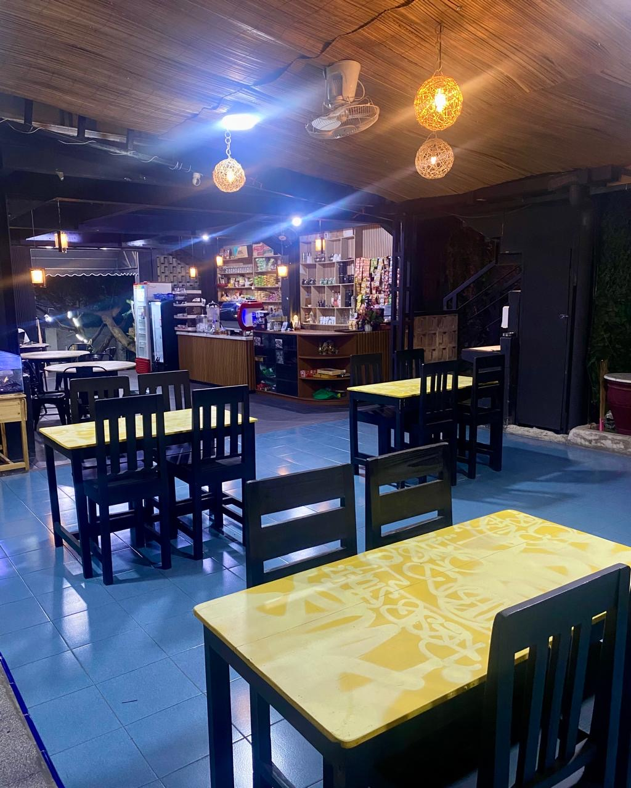
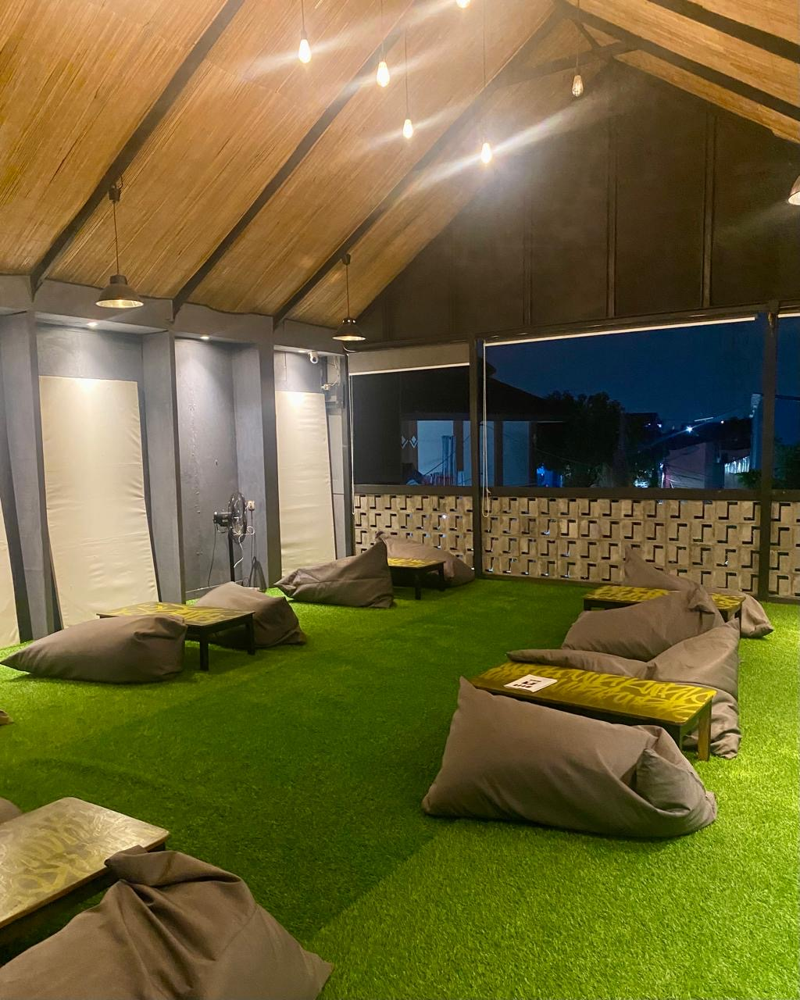
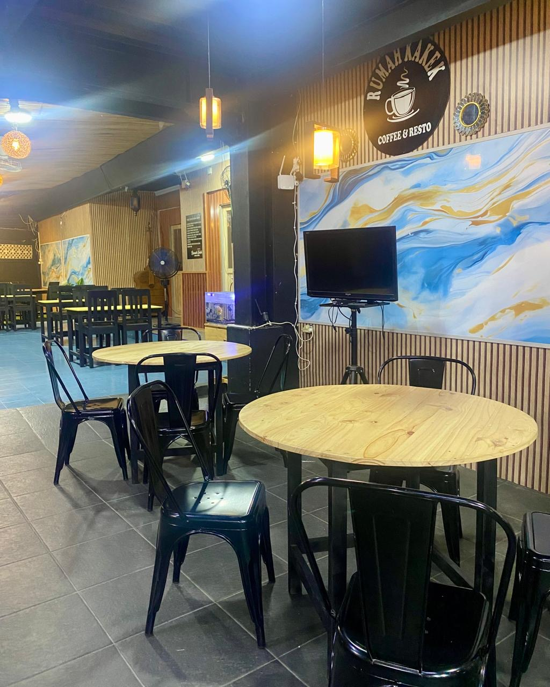
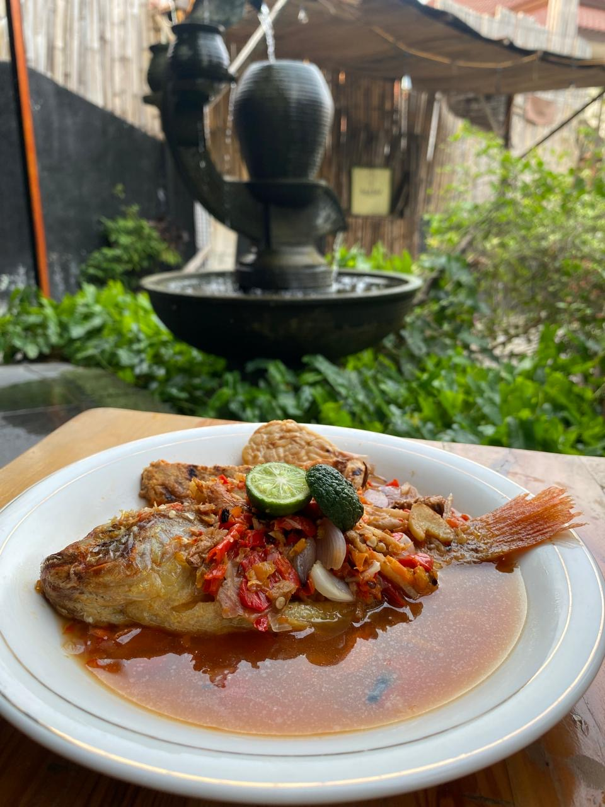
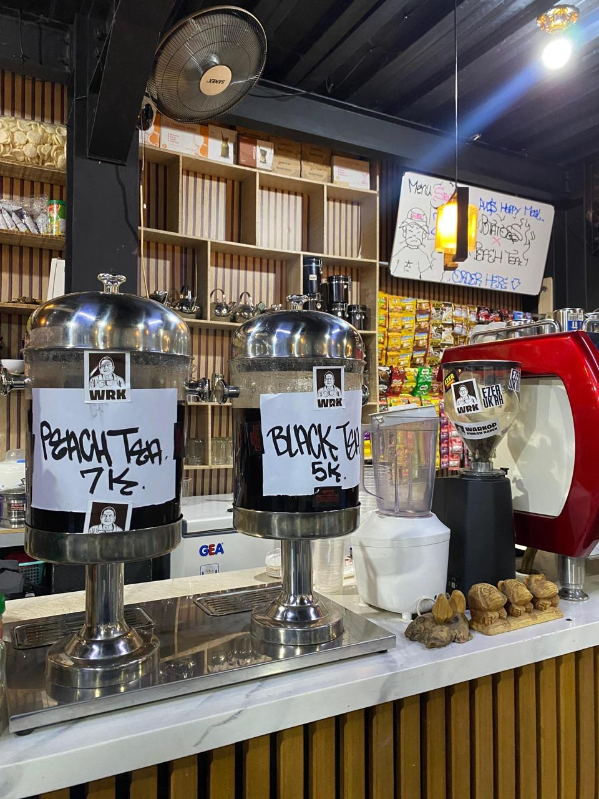

Buka Setiap Hari (Selasa Libur) | 12:00 Siang - 12:00 Malam
Galeri Rumah Kake






Rasakan pengalaman kopi artisan dengan biji nusantara pilihan di tempat yang estetik dan nyaman.
Buka Setiap Hari (Selasa Libur) | 12:00 Siang - 12:00 Malam




